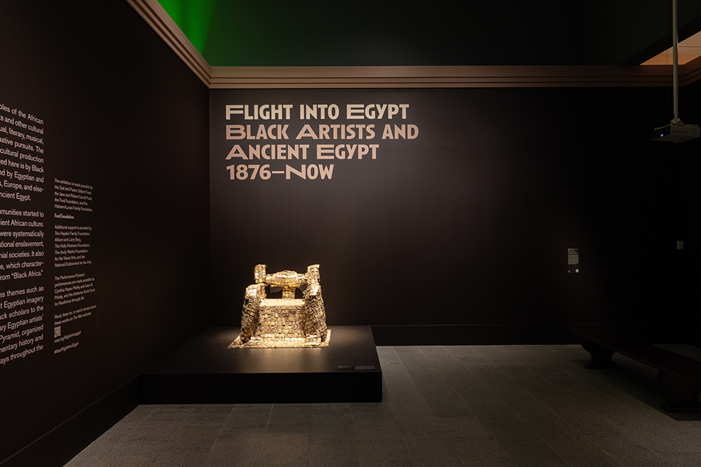
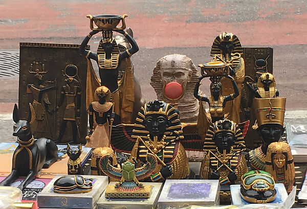

Flight into Egypt: Black Artists and Ancient Egypt, 1876–Now examines how Black artists and other cultural figures have engaged with ancient Egypt through visual art, sculpture, literature, music, scholarship, religion, politics, and performance. In a multisensory exploration of nearly 150 years of artistic and cultural production—from the 19th century to the Harlem Renaissance to the Black Arts Movement of the 1960s and 1970s to the present day—the exhibition includes nearly 200 works of art in a wide range of media.
Thematic sections featuring works from The Met collection and international loans from public and private collections trace subjects including how Black artists and other agents of culture have employed ancient Egyptian imagery to craft a unifying identity, the contributions of Black scholars to the study of ancient Egypt, and the engagement of modern and contemporary Egyptian artists with ancient Egypt.
Thematic sections featuring works from The Met collection and international loans from public and private collections trace subjects including how Black artists and other agents of culture have employed ancient Egyptian imagery to craft a unifying identity, the contributions of Black scholars to the study of ancient Egypt, and the engagement of modern and contemporary Egyptian artists with ancient Egypt. In a first for The Met, performance will be an integral part of the exhibition itself in the form of a dedicated gallery. Organized in collaboration with MetLiveArts, the “Performance Pyramid” will both present a documentary history of Black performance art incorporating ancient Egyptian themes and host live performances on select days throughout the run of the exhibition.
Discover the most exciting events happening at our museum!
Location: Museum Hall A
Date: Through February 17, 2025
Time: 10:00 AM - 5:00 PM